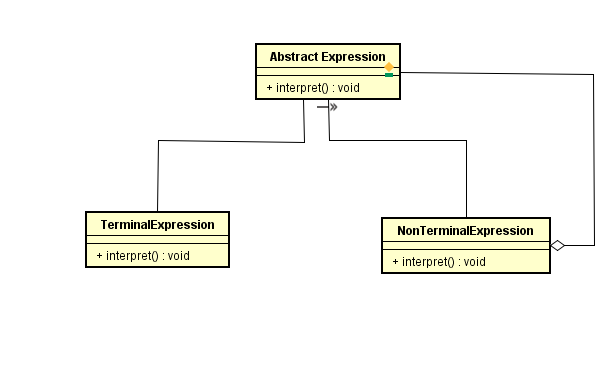

16 - Iterator
Descrição do padrão:
O Padrão de Projeto Interpreter tem como objetivo, dado uma linguagem, definir uma representação para a sua gramática junto com um interpretador que usa a representação para interpretar frases na linguagem. Por exemplo, se um determinado tipo de problema ocorrer com bastante frequência, pode valer a pena expressar instâncias do problema como sentenças em uma linguagem simples. Então você pode construir um interpretador que resolve o problema interpretando essas frases.
UML do padrão:
">Descrição do exemplo:
A ideia do exemplo é criar uma calculadora que recebe uma expressão pós fixada e usa uma classe abstrata, chamada Expression, para interpretar de maneiras diferentes as expressões.